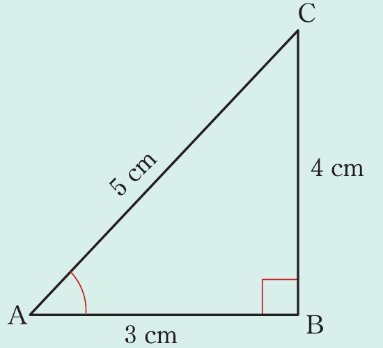

Mathematics for Secondary Schools
Example 8.3
In a right-angled triangle ABC,
=,\ =,\ \ =.
Find the value of each of the following:
- (a) sin A
- (b) cos A
- (c) tan A
Solution
The given information is summarized in the following figure.

From the figure, ABC is a right-angled triangle such that, .
It follows that:
(a)\ A=
A=.
(b)\ A=
A=.
(c)\ A=
A=.